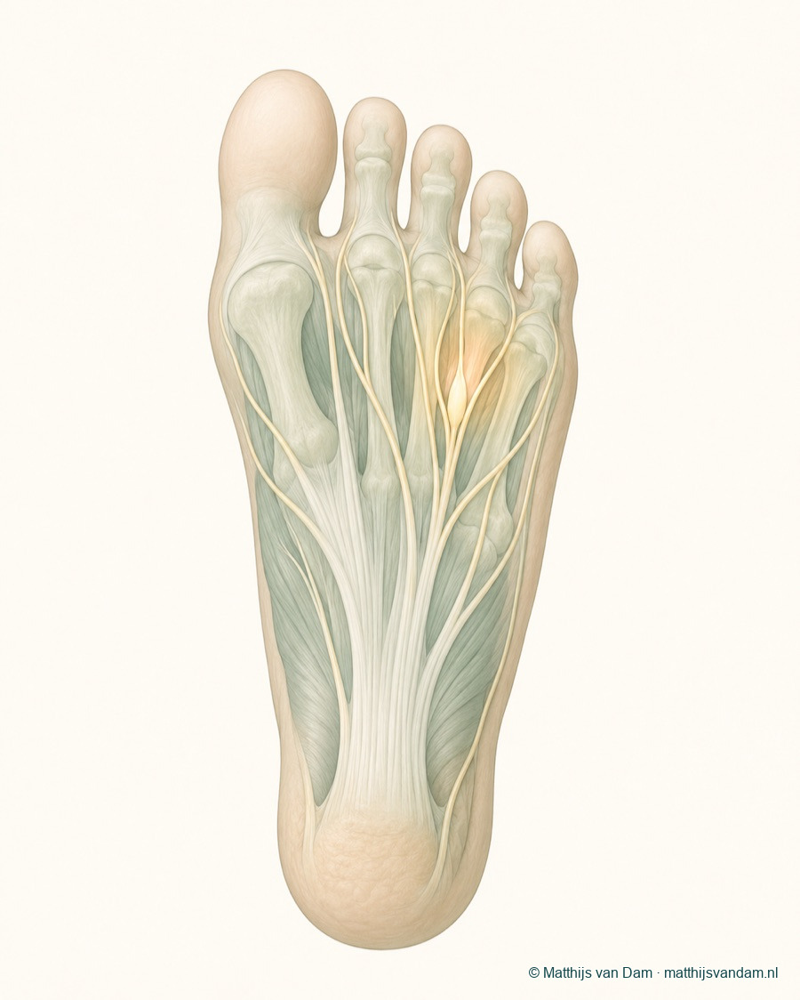
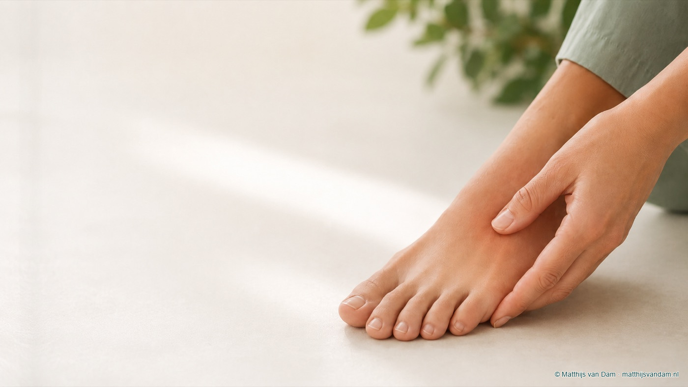

Wat is een Morton neuroom?
De naam Morton neuroom wordt gebruikt voor irritatie en verdikking rond een gevoelszenuw tussen de middenvoetsbeentjes. Meestal gaat het om de zenuw tussen de derde en vierde teen, maar klachten kunnen ook tussen andere tenen worden besproken. De term "neuroom" klinkt als een gezwel, maar in deze context gaat het meestal niet om een gewone tumor.
De zenuw loopt in een smalle ruimte tussen botjes, bandstructuren en weke delen. Druk, herhaalde belasting, voetvorm, schoenruimte en voorvoetmechaniek kunnen allemaal invloed hebben. Bij een deel van de mensen is er geen enkele duidelijke oorzaak aan te wijzen.

Welke klachten passen erbij?
Mensen beschrijven vaak brandende, stekende, elektrische of tintelende pijn in de voorvoet. Soms voelt het alsof er een steentje, vouwtje in de sok of drukplek onder de voet zit. De pijn kan uitstralen naar twee aangrenzende tenen en kan samengaan met een doof of vreemd gevoel in die tenen.
Klachten nemen vaak toe in smalle schoenen, schoenen met weinig ruimte bij de voorvoet of bij langer lopen en staan. Sommige mensen moeten de schoen uittrekken of de voorvoet masseren om verlichting te krijgen. Dat patroon kan richtinggevend zijn, maar bewijst de diagnose niet.

Tintelingen of doof gevoel kunnen bij Morton neuroom passen, maar ook bij andere zenuw-, gewrichts- of drukklachten. Daarom blijft lichamelijk onderzoek belangrijk.
Wat kan het ook zijn?
Voorvoetpijn is vaak een puzzel van locatie, belasting en voetvorm. Een Morton neuroom zit in de differentiaaldiagnose vooral wanneer zenuwachtige klachten op de voorgrond staan. Bij meer drukpijn onder de bal van de voet kan metatarsalgie passender zijn. Bij pijn rond de basis van een teen, zwelling of veranderende teenstand kunnen MTP- of plantaire plaatklachten meespelen.
Andere oorzaken die afhankelijk van het verhaal kunnen worden meegewogen zijn een stressreactie of stressfractuur, sesamoidklachten onder de grote teen, artrose, een hamerteen of klauwteen, druk door schoenen, eelt of bredere zenuwklachten vanuit een andere plek.
Metatarsalgie
Vooral pijn onder de bal van de voet door drukverdeling, stand, belasting of schoenen. Tinteling staat meestal minder op de voorgrond.
Lees meer over metatarsalgieMTP-/plantaire plaat
Pijn rond de basis van een teen, soms met zwelling, instabiliteit of veranderende teenstand. Dat vraagt een andere beoordeling dan zuivere zenuwirritatie.
Lees meer over MTP-klachtenOnderzoek en diagnose
De beoordeling begint met het verhaal: waar zit de pijn precies, naar welke tenen straalt het uit, welke schoenen lokken klachten uit, hoe lang bestaan de klachten en wat is al geprobeerd? Tijdens lichamelijk onderzoek wordt gekeken naar drukpijn tussen de middenvoetsbeentjes, gevoel in de tenen, teenstand, beweeglijkheid van de MTP-gewrichten, eelt, voorvoetbreedte en belasting.
Echo of MRI kan soms helpen, vooral wanneer het beeld niet duidelijk is of wanneer andere oorzaken moeten worden uitgesloten. Beeldvorming is niet automatisch beslissend: een afwijking op een scan moet passen bij het verhaal en de plek van de klachten. Anders bestaat het risico dat een gevonden afwijking te veel betekenis krijgt.
Eerst niet-operatieve opties
De eerste behandeling is meestal gericht op ruimte en drukverdeling. Denk aan schoenen met voldoende breedte bij de voorvoet, vermijden van knellende schoenen, zoolaanpassing of een drukontlastende voorziening. Ook het aanpassen van belasting, loopafstand of sportopbouw kan tijdelijk nodig zijn.
Meer breedte en minder knelling bij de voorvoet kan de druk op de zenuw verminderen.
Een zool of voorvoetsteun kan in geselecteerde situaties de belasting anders verdelen.
Aanpassen van lopen, werk of sport kan rust geven terwijl de oorzaak verder wordt beoordeeld.
Wanneer komen injectie of operatie in beeld?
Wanneer klachten aanhouden ondanks goede schoen- en drukmaatregelen, kan een injectie in sommige situaties worden besproken. Het doel is meestal verminderen van irritatie rond de zenuw. Het effect verschilt per persoon en is niet altijd blijvend. Ook mogelijke nadelen en alternatieven horen daarbij vooraf besproken te worden.
Een operatie, vaak gericht op verwijderen of vrijleggen van het geïrriteerde zenuwdeel, is geen standaard eerste stap. Dat komt pas in beeld wanneer klachten duidelijk passen, andere oorzaken voldoende zijn meegewogen en niet-operatieve maatregelen onvoldoende helpen. Na een operatie kan gevoelsverandering in het gebied van de zenuw blijven bestaan; dat hoort bij de afweging.
Schoen en zool
Gericht op meer ruimte, minder knelling en betere drukverdeling onder de voorvoet.
Injectie
Kan soms worden besproken bij aanhoudende irritatie, met aandacht voor onzeker effect en persoonlijke risico's.
Operatie
Alleen bij zorgvuldig geselecteerde klachten, na beoordeling van diagnose, alternatieven en verwachtingen.
Wat bespreek je tijdens een consult?
Neem zo mogelijk schoenen mee waarin de klachten ontstaan, gebruikte steunzolen en informatie over eerdere behandelingen of injecties. Bespreek ook of de klacht vooral pijn, tinteling, doofheid, schoendruk of beperking in lopen en sport is. Dat helpt om Morton neuroom te onderscheiden van andere oorzaken van voorvoetpijn.
Waar kan je terecht?
Op deze pagina geef ik algemene uitleg over een Morton-neuroom. Dit is geen officiële ETZ-patiëntinformatie en vervangt geen persoonlijke medische beoordeling. De meeste voorvoetklachten beginnen niet bij een orthopedisch chirurg. Bij nieuwe of niet-acute klachten is de huisarts vaak het eerste aanspreekpunt; afhankelijk van de situatie kunnen podotherapie, fysiotherapie of schoentechnische zorg een rol spelen.
Als specialistische beoordeling passend is, kan de verwijzer gericht naar mij verwijzen via de gebruikelijke zorgkanalen. Bij een verwijzing op mijn naam voer ik de beoordeling in principe zelf uit. De wachttijd kan daardoor soms langer zijn. Voor afspraken, planning, uitslagen en praktische ziekenhuisinformatie zijn de officiële ETZ-kanalen leidend.
Is een Morton-neuroom al elders vastgesteld of beoordeeld en is er behoefte aan een tweede mening, dan kan de verwijzer daarvoor ook gericht naar mij verwijzen. Ik beoordeel de situatie opnieuw; een tweede mening betekent niet automatisch dat de eerdere beoordeling of behandelrichting verandert.
Deel via deze website geen medische gegevens, foto's, verwijsbrieven of vragen over lopende zorg. Gebruik deze website niet bij spoed of acute klachten. Neem dan contact op met de huisarts, huisartsenpost, de geldende spoedlijn of bel 112 wanneer dat nodig is.
Veelgestelde vragen
Is een Morton neuroom een tumor?
Meestal wordt met Morton neuroom geen gewone tumor bedoeld, maar irritatie of verdikking rond een gevoelszenuw tussen de middenvoetsbeentjes. De term kan verwarrend zijn; de betekenis moet altijd in de medische context worden beoordeeld.
Kan een Morton neuroom uitstralen naar de tenen?
Ja, klachten kunnen uitstralen naar twee aangrenzende tenen, vaak met branderig, tintelend of doof gevoel. Dat patroon is niet uniek voor Morton neuroom en sluit andere oorzaken niet uit.
Wat is het verschil tussen Morton neuroom en metatarsalgie?
Metatarsalgie beschrijft pijn onder de bal van de voet, meestal door druk of belasting. Morton neuroom gaat specifieker over irritatie van een zenuw tussen de middenvoetsbeentjes. In de praktijk kunnen klachten overlappen.
Is een echo of MRI altijd nodig?
Niet altijd. Het verhaal en lichamelijk onderzoek zijn belangrijk. Echo of MRI kan soms helpen wanneer de diagnose onzeker is of wanneer andere oorzaken moeten worden meegewogen.
Moet een Morton neuroom geopereerd worden?
Nee. Vaak worden eerst schoenruimte, drukontlasting, zoolaanpassing en belasting besproken. Een operatie komt alleen in beeld bij zorgvuldig geselecteerde, aanhoudende klachten.
Kan een injectie helpen bij Morton neuroom?
Een injectie kan in sommige situaties worden besproken, maar het effect en de duur daarvan verschillen per persoon. De keuze hangt af van klachten, onderzoek, eerdere maatregelen en eventuele risico's.